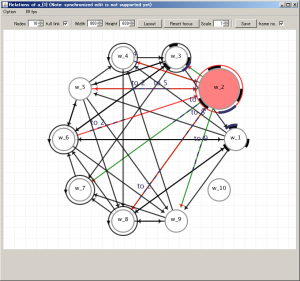
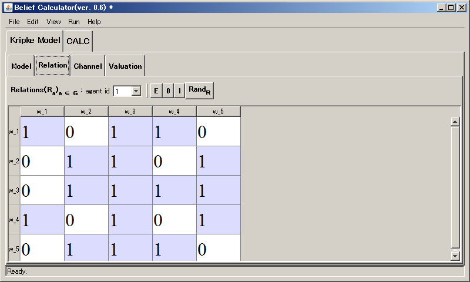
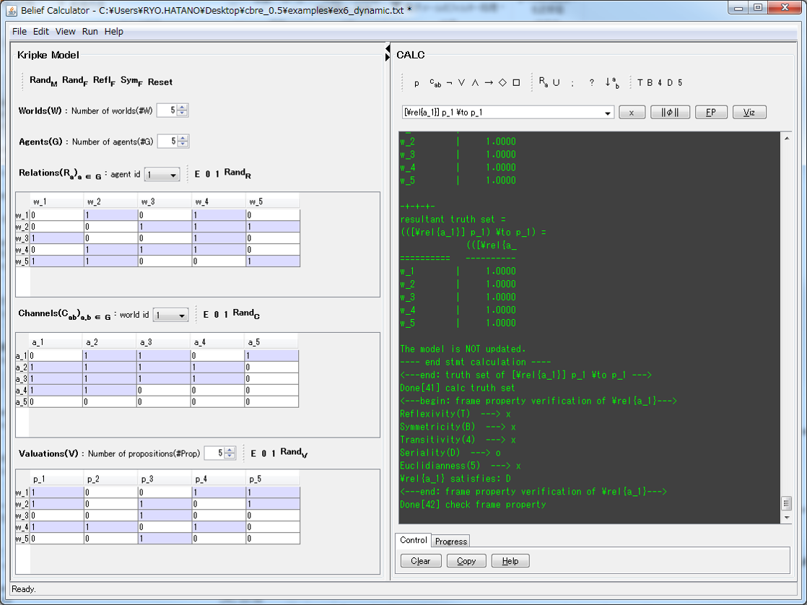

東条研究室 Tojo Lab.
東条研究室 Tojo Lab.
School of Information Science, JAIST
Belief Calculator (0.6.4)
News
Last modified: September. 17th, 2016
-
September 17th, 2016
- Version 0.6.4 is released: Download
- A synchronized manipulation mechanism of
Kripke model editorandVisual Editoris implemented. - Note: If you wish to edit Kripke frame by Visual Editor, please click the checkbox of `Add/del links’, and select source and destination nodes.
September 4th, 2016
-
Version 0.6.3 is released: Download
-
We have improved texts of the interface, also improved key type manipulation of matrices, and removed strong dependency to Java 7.
- Tested on Java version "1.7.0_80" (Java(TM) SE Runtime Environment (build 1.7.0_80-b15) on Windows 7 64bit)
- We would like to thank anonymous referees (special issues of TTL2015) for their helpful comments and bug reports.
-
Note: a visual editor has been moved to "menu > run > Open Visual Editor, temporarily". If you wish to use the editor, please install the latest version of Java 8.
- Unfortunately, a visual editor does not work on Java 7 since an external library (Processing3) for the editor depends on Java 8. This library is necessary to work the editor, and we cannot revise their library.
-
-
September 2nd, 2016
Version 0.6.2 is released: Download
-
June 4th, 2016
- Version 0.6.1 is released: Download
- We have added a developing version of `Visual Editor’
- Current version supports visualization only, but we have already implemented the basic editing functions for Kripke model e.g., adding edges, sending messages between agents
- We are planning to add the synchronized editing functions w.r.t the Kripke model editor in the future release

-
Mar. 12th, 2016
- Version 0.6 is released: Download
- We have fixed so many bugs and issues, e.g., malfunctions of model size modification on concurrent job execution and save/load.
- As we promised, we open our source code for public: Download
- New prototype interface for embedded systems are developed (tested on Raspbian with Raspberry Pi 2 model B + official Raspberry Pi 7 inch touch display).

-
Dec. 15th, 2015
- Version 0.5 is released: Download
- Many helpful functions, e.g., save, load, background job controller, running options, insert buttons, are added.
- Note: due to concurrent job execution, quick GUI manipulation sometimes causes errors. If you face such errors, please kindly try GUI manipulation slowly again.
-
Oct. 7th, 2015
- We have updated our software to calculate recursive formulas.
- This is a journal submitted version (beta ver.): Download
- Note: Source code will soon be opened for public.
Summary
This is a simple calculation program for (multi-agent) modal logic.
Screenshot

Supported platform
Java 8 on Windows7, MacOS (Yosemite) and Linux (Debian 8 Jessie, Raspbian).
Download
Latest version (0.6.4)
- 0.6.4: Download
Old versions
3 steps to install and run:
1. Unzip downloaded archive
2. Install Java and Graphviz
Please install the latest version of Java 8.
If you wish to obtain a graphical output, please install Graphviz.To install Graphviz, we have tested following archives or commands:
- Windows: graphviz-2.38.msi
- MacOS: graphviz-2.36.0.pkg (for Mountain lion)
- Linux: sudo apt-get install graphviz (for Debian 8 Jessie)Afterward, please add path of `[INSTALL_DIR]/bin’ to PATH of your environment variables.
3. Run batch file or execute the following command
Execute run.bat (for Windows), run.sh (for MacOS and Linux, please do "chmod 755 run.sh" before execution.) or the following command at [INSTALLED DIR]:
For Windows:
java -classpath dist/linsem-gui.jar;lib/ujmp-complete-0.2.5.jar;lib/linsem.jar; linsem.gui.GUIMainFor MacOS and Linux:
java -cp dist/linsem-gui.jar:lib/ujmp-complete-0.2.5.jar:lib/linsem.jar: linsem.gui.GUIMainIf you wish to try a developing version of Visual Editor, please add the following jars to your classpath (optional, for windows):
lib/linsem-ext.jar;lib/processing/core.jar;lib/processing/gluegen-rt.jar;lib/processing/gluegen-rt-natives-windows-i586.jar;lib/processing/jogl-all.jar;lib/processing/jogl-all-natives-windows-i586.jarUsage
Please push HELP button on the software or see here.
Published paper
Underlying concepts of our software come from the following papers.
- Ryo Hatano, Katsuhiko Sano and Satoshi Tojo. Linear algebraic semantics for multi-agent communication, In Proc. of the 7th International Conference on Agents and Artificial Intelligence, vol.1, pp172-181, 2015.
- Ryo Hatano, Katsuhiko Sano and Satoshi Tojo. Teaching modal logic from linear algebraic viewpoints, In Proc. of the 4th International Conference on Tools for Teaching Logic.
License
Acknowledgement
Many thanks for my supervisor, Prof.Tojo, assistant Prof.Katsuhiko Sano and all reviewers of our paper. Thanks also for developers of Universal Java Matrix Package, JavaCC, Graphviz and Processing3. We thank anonymous referees of ICAART2015 and TTL2015 for their helpful comments.
—since Nov 14, 2014.